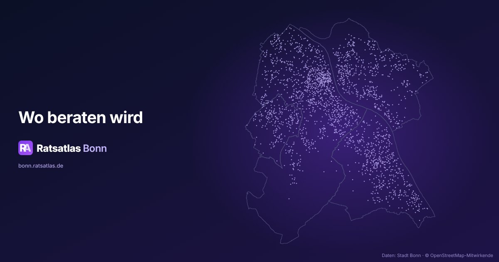
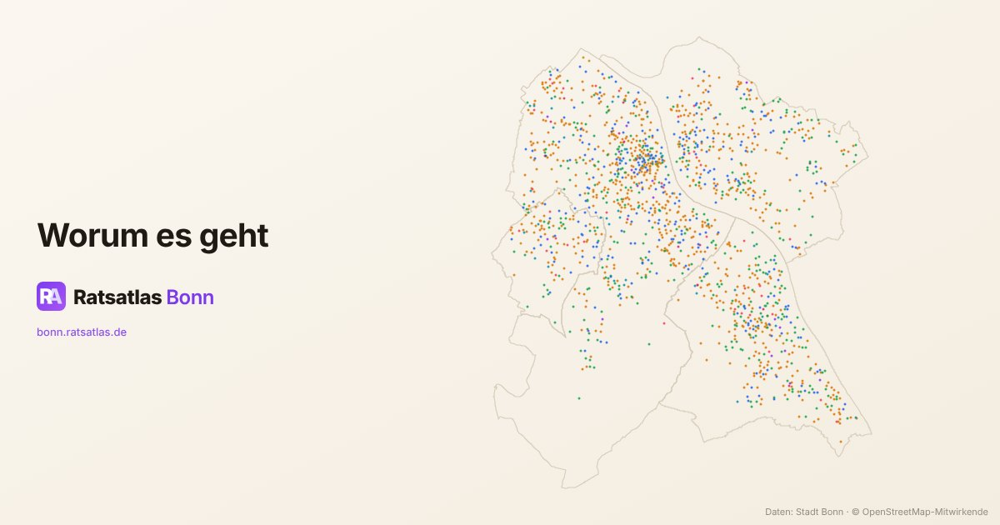
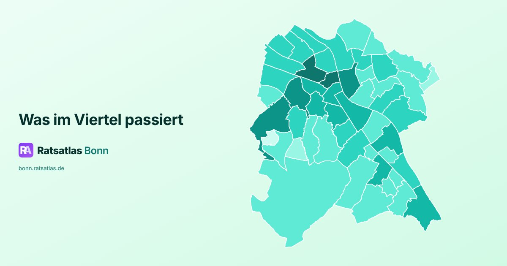
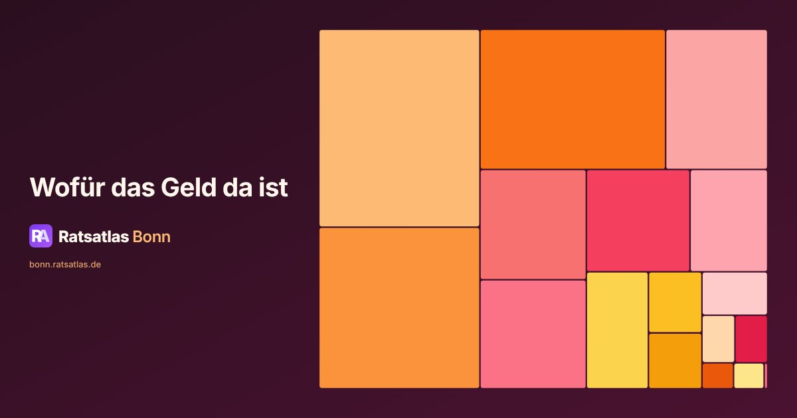
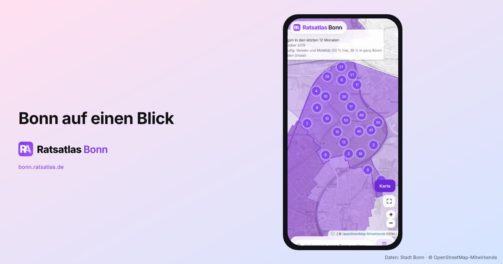

Teilen
Bilder zum Ratsatlas Bonn für Beiträge, Präsentationen und die Presse. Frei nutzbar mit Nennung „Ratsatlas Bonn“ (CC BY 4.0 ).
Wortmarke
Logo und Name auf violettem Grund.
Formate und Dateien
Nennung: „Ratsatlas Bonn (bonn.ratsatlas.de)“, CC BY 4.0.

Bonn in Punkten
Jeder Punkt ist ein Ort, auf den sich eine Vorlage bezieht; dazu die vier Stadtbezirke.
Formate und Dateien
Nennung: „Ratsatlas Bonn (bonn.ratsatlas.de)“, CC BY 4.0. Mit Karte: zusätzlich „© OpenStreetMap-Mitwirkende“.

Themen in Farbe
Dieselben Orte, gefärbt nach dem Thema des federführenden Amtes.
Formate und Dateien
Nennung: „Ratsatlas Bonn (bonn.ratsatlas.de)“, CC BY 4.0. Mit Karte: zusätzlich „© OpenStreetMap-Mitwirkende“.

Ortsteile
Die 51 Ortsteile, je dunkler, desto mehr Vorlagen mit Ortsbezug seit 2019.
Formate und Dateien
Nennung: „Ratsatlas Bonn (bonn.ratsatlas.de)“, CC BY 4.0.

Haushalt
Die 17 Produktbereiche des städtischen Haushalts nach ihren geplanten Aufwendungen 2026.
Formate und Dateien
Nennung: „Ratsatlas Bonn (bonn.ratsatlas.de)“, CC BY 4.0.
Prozesslinie
Der Weg einer Vorlage durch die Gremien, Station für Station.
Formate und Dateien
Nennung: „Ratsatlas Bonn (bonn.ratsatlas.de)“, CC BY 4.0.

Karte auf dem Telefon
Bildschirmfoto der Karte in einem Telefonrahmen.
Formate und Dateien
Nennung: „Ratsatlas Bonn (bonn.ratsatlas.de)“, CC BY 4.0. Mit Karte: zusätzlich „© OpenStreetMap-Mitwirkende“.
Themenseite
Bildschirmfoto der Themenseite „Verkehr und Mobilität“ in einem Browserrahmen.
Formate und Dateien
Nennung: „Ratsatlas Bonn (bonn.ratsatlas.de)“, CC BY 4.0. Mit Karte: zusätzlich „© OpenStreetMap-Mitwirkende“.
Nutzung, Formate und Quellen
Die Bilder stehen unter der Lizenz CC BY 4.0 . Bitte nennen Sie „Ratsatlas Bonn (bonn.ratsatlas.de)“; bei Motiven mit Karte oder Orten zusätzlich „© OpenStreetMap-Mitwirkende“ (ODbL). Die Logos dürfen nicht verändert werden.
Formate: Link-Vorschau (1200 × 630), Quadrat (1080 × 1080), Hochformat 4:5 (1080 × 1350), Story 9:16 (1080 × 1920), Breitbild 16:9 (1920 × 1080), Banner 3:1 (1500 × 500); Breitbild, Quadrat und Hochformat auch in 3000 px Breite für den Druck. JPG und WebP für alle Motive, SVG für die Grafiken, PNG für die Wortmarke.
Grafiken aus den Daten des Ratsatlas: Orte der Vorlagen (verortet aus OParl-API der Stadt Bonn, Geodaten der Stadt Bonn und OpenStreetMap), Haushaltspläne der Stadt Bonn, Prozesslinie der Drucksache 252458. Bildschirmfotos der Seite. Stand der Bilder: 10.11.2026.